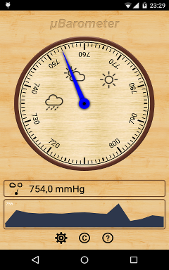
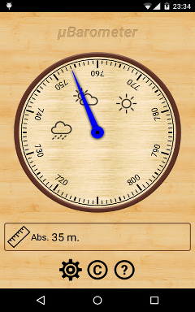
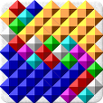
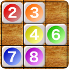
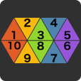
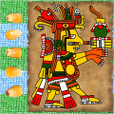
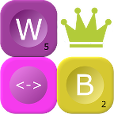
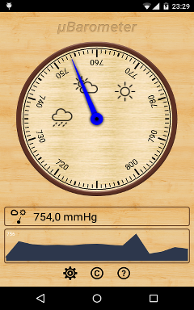
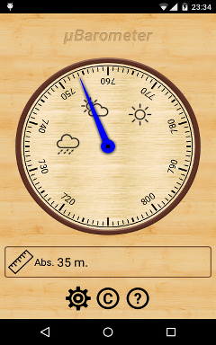
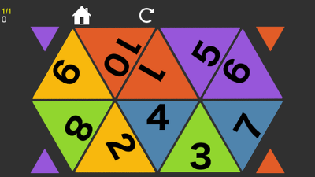

|  |  |
μBarometer FAQ |
|
muBarometer |
 Filler Classic |
 Sumoku |
 Ten Triangles |
 Puluc |
 Words Builder |
muBarometerSimple, useful and nice barometer |
A simple barometer for monitoring atmospheric pressure.
The goal of μBarometer is to be useful, small and elegant.
Features:
The pressure graph shows the change in pressure in 48 hours. To collect data μBarometer runs a small service which saves the pressure value every hour.
The altitude value are based on the current pressure value. For quick switching between pressure/altitude indicators just tap on the indicator icon. You can measure the relative altitude. Just tap on the altitude indicator and it will show the relative altitude from the current point.
|  |  |
μBarometer FAQ |
Filler classicA logical game for two players. You goal is to fill as many cells as you can. |
Filler (aka Flood-It or 7 Colors) is a well-known puzzle game. You play against a human or computer opponent on a field with color squares. Your goal is to occupy as many squares as possible. Elements of the selected color are occupied if they are adjacent (have common edge) to the already occupied squares. But you cannot select the current color of your opponent.
Filler Classic has two game modes:
SumokuA logical game with principles of Scrabble and Sudoku |
In sumoku puzzles, color tiles with digits must be arranged in a crossword-style pattern such that each row and column adds up to a multiple of the key number. In puzzles colors or numbers cannot repeat within a single row or column.
This game was originally developed by BlueOrange
Ten TrianglesA Logical puzzle game that looks like "Fifteen" |
The goal of this game is to set ten triangles in the correct order. But it's not so easy, as you can move triangles by rotating a group of six of them. This version contains 20 built-in puzzles. Also you can try to solve randomly generated puzzles.
This game is for those who likes such puzzles as "Fifteen" but searching something a little bit different.
|  |
|
PulucPuluc is a running-fight board game originating in Mesoamerica. |
Puluc (also Bul, Buul or Boolik) is an ancient Mayan running-fight board game. Initially the game had ritual significance. Mayan played Puluc the night before the sowing of maize. The game was designed to give strength to revive grains. This game is a little bit like such games as Backgammon.
Rules:
With this app you can play with your friends on the same device or in the multiplayer mode via the Internet. Also you can play against Android (with three different AI).
Words BuilderThe words' game is a combination of the elements of "Scrabble" and "Jewels". |
The goal of the game is to build the maximum number of words from any adjoining letters, including diagonals over time. This game requires not only speed, but also tactics and the ability to calculate the combination of a few moves ahead.
Initially you have 3 minutes for the compilation of words. For each correctly word you get extra time. The longer the word, the more seconds you will get.
The game uses a dictionary words from SOWPODS.